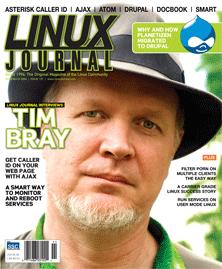

Shutdown Archive web server
Search:
Linux Journal
Issue #151/November 2006

Features
Interview with Tim Bray
by James Gray
Tim Bray releases Atomic energy.
Caller ID with Asterisk and Ajax
by Mike Diehl
Want to do your call screening by Web page?
Migrating to Drupal
by Abhijeet Chavan and Michael Jelks
What drove Planetizen to migrate to Drupal?
Simple Web Sites Using DocBook, XML and CSS
by David Lynch
How to build simple content Web sites using DocBook XML and CSS.
Indepth
Linux and Open Source in Telecommunications
by Ibrahim Haddad
What's good about being disruptive?
SMART (Smart Monitoring and Rebooting Tool)
by Albert Martorell
A smarter way to monitor services.
A Basic Text-Based Recording Studio
by Matthew Geddes
You don't need a fancy GUI to create a powerful recording studio.
Building and Integrating a Small Office Intranet
by Dave Jones
Add server-side credentials to the LAMP stack.
Add Web Porn Filtering and Other Content Filtering to Linux Desktops
by Donald Emmack
Station DansGuardian over incoming Web content.
Columns
Reuven M. Lerner's At the Forge
Beginning Ajax
Marcel Gagné's Cooking with Linux
The Dynamic Web: for Those Who Like to Watch
Dave Taylor's Work the Shell
Analyzing Log Files Redux
Mick Bauer's Paranoid Penguin
Running Network Services under User-Mode Linux, Part I
Jon “maddog” Hall's Beachhead
A Small Conference
Doc Searls' Linux for Suits
The Search for Terrestrial Stupidity
Nicholas Petreley's /var/opinion
Come Together
In Every Issue
Letters
UPFRONT
New Products
Archive Index
Shutdown Archive web server
Search:
Copyright © 1994 - 2018
Linux Journal
. All rights reserved.